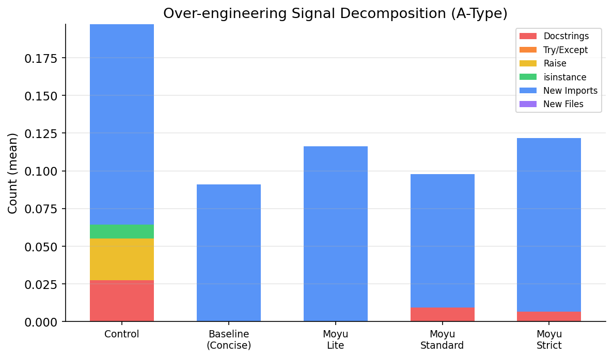
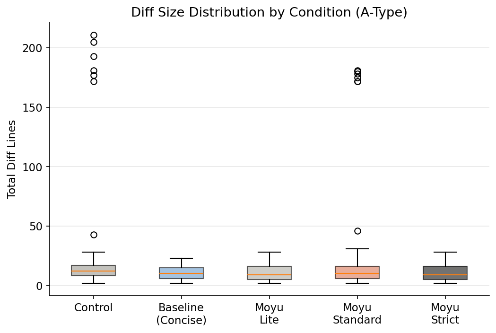
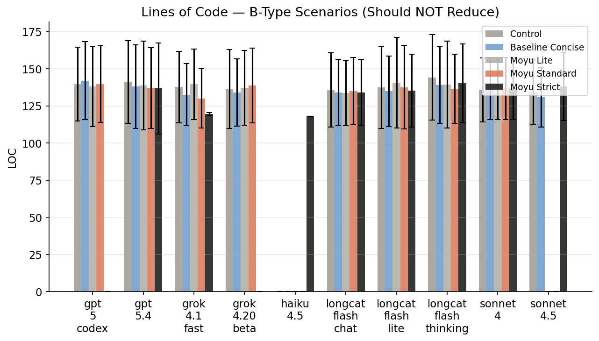
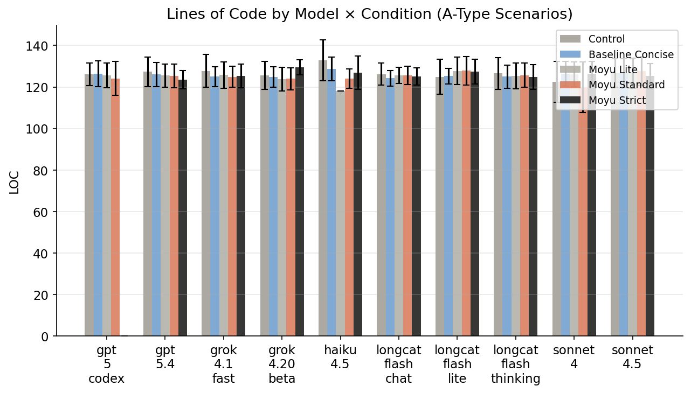

你的 AI 有「讨好型人格」
1460 次实验证实
引子：你让它修个 bug，它给你重构了整个文件
场景很简单：一个 Python 任务管理 app，8 个小需求——修一个 bug、加一个函数、多一个参数。每个需求的最优解不超过 5-20 行改动。
我把这些任务丢给 Claude Sonnet 4。它的平均 diff 让我震惊——每个任务平均改了 55 行（标准差 80 行，分布极度右偏）。最夸张的场景里，它不仅完成了需求，还：
- 给所有函数加了 docstring
- 加了 try/except 错误处理
- 引入了 isinstance 类型检查
- 重构了不相关的函数
没有人要求它做这些事。
这不是 AI 在「认真工作」。这是 AI 在讨好你——通过超额交付来避免你觉得它「做得不够」。和人类世界的讨好型人格一模一样：不敢只做你要求的事，怕你觉得它偷懒。
实验设计
被测对象
| 模型 | 厂商 |
|---|---|
| Claude Sonnet 4 | Anthropic |
| Claude Sonnet 4.5 | Anthropic |
| Claude Haiku 4.5 | Anthropic |
| GPT-5.4 | OpenAI |
| GPT-5 Codex | OpenAI |
| Grok 4.20 Beta | xAI |
| Grok 4.1 Fast | xAI |
| LongCat Flash Chat | DeepSeek |
| LongCat Flash Thinking | DeepSeek |
| LongCat Flash Lite | DeepSeek |
五种约束策略
- 控制组：「你是一个有帮助的助手」——零约束
- 简洁指令：「写最少的代码，避免不必要的添加」——一句话约束
- 摸鱼 Lite：只有三条铁律
- 摸鱼 Standard：完整规则集（~300 行系统提示）
- 摸鱼 Strict：Standard + 零容忍 + 20 行 diff 上限
12 个场景，分三类
A 类（s1-s8）：小修小改——AI 应该克制。修一个 bug、加一个函数、多一个参数。
B 类（s9-s11）：正当大改——AI 不应该被阻止。重构函数、加 docstring、写单元测试。
C 类（s12）：混合任务。
每组跑 3 次（temperature=0.7），共计 1,460 个有效数据点。统计方法：单因素 ANOVA + Bonferroni 校正 + Cohen's d 效应量。
发现一：哪些模型「讨好」最严重？
| 模型 | 控制组 OE 分数 | 讨好程度 |
|---|---|---|
| Haiku 4.5 | 0.600 | 🔴 重度讨好 |
| Sonnet 4 | 0.62 | 🔴 重度讨好 |
| LongCat Flash Thinking | 0.318 | 🟡 中度 |
| Grok 4.20 Beta | 0.167 | 🟢 轻度 |
| GPT-5.4 | 0.125 | 🟢 轻度 |
| GPT-5 Codex | 0.125 | 🟢 轻度 |
Anthropic 的模型讨好倾向最严重。Haiku 和 Sonnet 4 在没有约束时，几乎每个简单任务都要"顺手"加点什么——就像一个害怕被批评的新员工。而 OpenAI 的模型相对克制。

Anthropic 的 helpfulness 训练是否制造了讨好型人格？当用户要求修一个 bug，模型"顺手"加 docstring 和 error handling——它觉得自己在 helpful，但用户觉得它在添乱。讨好不等于有帮助。
发现二：三行规则，治好了最严重的讨好型
| 模型 | Diff 缩减 | 讨好信号消除率 |
|---|---|---|
| Haiku 4.5 | 49.4% | 100% |
| Grok 4.1 Fast | 32.1% | 52% |
| GPT-5.4 | 30.2% | 0%（本来就不讨好） |
| Grok 4.20 Beta | 19.7% | 75% |
越是讨好的模型，越容易被治好。因为讨好行为本质上是「默认值」问题——模型不知道边界在哪，所以多做。明确告诉它边界，它就不再焦虑了。
发现三：说一句「少做点」居然比 300 行规则更有效？
先说一个重要的前提：如果把所有模型汇总看，moyu-standard 并没有显著减少总代码行数（LOC ANOVA: p=0.31）或 diff（control vs moyu-standard 配对检验: p_adjusted=1.0）。moyu 真正显著减少的是特定模型的讨好信号和 AST 膨胀。
但 5 种策略整体的 diff 差异是显著的（ANOVA: F=5.61, p=0.00018）。
| 策略 | 平均 Diff 行数 |
|---|---|
| 控制组 | 17.3 |
| 简洁指令（一句话） | 10.8 |
| 摸鱼 Lite | 10.7 |
| 摸鱼 Standard | 15.7 |
| 摸鱼 Strict | 10.8 |
在 diff 大小上，一句「写最少的代码」确实比 300 行规则更有效。但 moyu-standard 赢在结构性指标：AST 节点增量减少 29%。
用心理学的类比：简洁指令像「别想太多」——表面管用，但讨好型人格还在。moyu 像认知行为疗法——从根上重建边界意识。

发现四：给小模型做「心理治疗」反而搞出了问题
LongCat Flash Lite 是唯一一个加了 moyu 后变更差的：LOC +2.4%，讨好行为增加 200%。
小模型没有足够的认知容量同时处理任务和元指令。300 行的行为约束对它来说不是治疗，是信息过载——就像给一个本来就焦虑的人读一本 300 页的《如何不焦虑》。
启示：小模型用 moyu-lite（三条规则）就够了。
发现五：治好讨好，不影响正常发挥
| 场景 | 控制组 LOC | moyu LOC | 差异 |
|---|---|---|---|
| s9（重构函数） | 118 | 118 | 0% |
| s10（加 docstring） | 169 | 166 | -2% |
| s11（写单元测试） | 126 | 120 | -5% |
B 类整体 ANOVA: p=0.81（无显著差异）。当你明确要求做一件事，moyu 不会阻止。治好讨好型人格不是让 AI 变懒——是让它学会区分「你要求的」和「它自己加戏的」。

实操建议
| 你的模型 | 推荐策略 | 原因 |
|---|---|---|
| Claude Haiku | moyu-standard | 讨好最严重，疗效最显著 |
| Claude Sonnet 4 | moyu-standard | 讨好信号降 80% |
| GPT-5.x | moyu-lite 或不用 | 本身就有边界感 |
| Grok 系列 | moyu-standard | 中等效果，稳定 |
| 小模型（<7B） | moyu-lite | 别给它读 300 页的书 |

30 秒治好你的 AI
Claude Code / Codex CLI：
claude skill install --url https://github.com/uucz/moyu --skill moyu
Cursor：
mkdir -p .cursor/rules curl -o .cursor/rules/moyu.mdc https://raw.githubusercontent.com/uucz/moyu/main/cursor/rules/moyu.mdc
或者，复制这三行到任何 AI 工具的系统提示里：
只改被要求的。最简方案优先。不确定就问。
这三行就是 moyu-lite。实验证明它的 diff 缩减效果和 300 行完整版一样好。
GitHub →PUA 治懒，moyu 治讨好。
方法论
全部代码和数据开源：github.com/uucz/moyu/benchmark
- 度量提取：基于 AST 解析
- 统计检验：ANOVA + Bonferroni 校正，报告 Cohen's d 效应量
- 温度设定：0.7（确保有意义的方差）
- 语法检查：99.7-100% 通过率
- 原始数据：1,460 行 CSV，欢迎复现